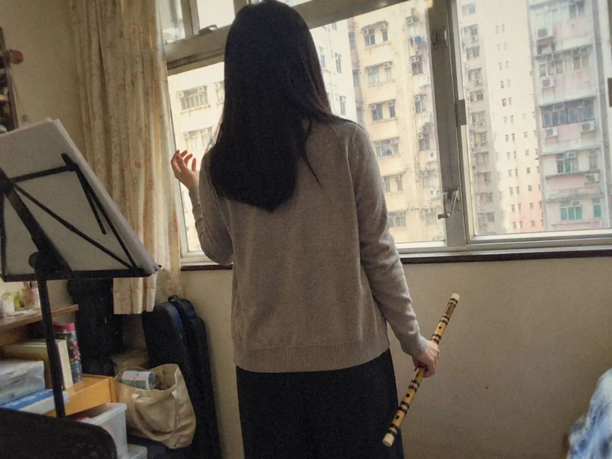
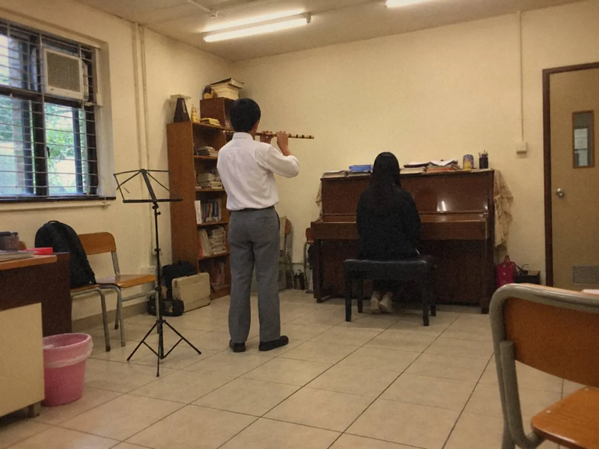

竹笛的語氣，要先從唱開始。把旋律的主要音唱清楚，知道句子往哪裏走，再決定滑音、打音放在哪裏。裝飾只加一處，比較前後，韻味比每句都加來得清楚。

照譜吹，音都準，自己聽着卻像讀一張清單。加了幾個裝飾，旋律熱鬧了，拍子卻不見了。這兩個問題，往往是同一件事。
滑音與打音，要帶向哪個音？
裝飾音如果只像手指動作，音樂就機械。先把它放回骨幹旋律，問兩件事：它帶向哪個主要音？落在哪個時間位置？
練法可以這樣走：
- 暫時拿走樂句裏所有裝飾，唱清楚主要音及其落點。
- 標記留白，再在轉折位選一處加入打音或滑音。
- 用慢速釐清裝飾在主音之前、之中還是之後。
- 回到正常速度，收窄幅度，按風格收攏。
要是加了技巧之後拍子壞了，就減少。句子不清楚時，技巧越多越散。
不同作品的語氣，不宜用同一套裝飾硬套。竹笛的倚音、打音或其他裝飾，都應該依附在樂句的語氣上。
裝飾音放在哪一拍？
把主要音唱出來，拍子保持穩定，找出哪個音最重要，哪裏正在收束。然後只加一個裝飾，聽它是帶向重音、輕輕點一下，還是改變了句尾的語氣。
放慢時，裝飾可以暫時拉開到容易分辨的長度，目的是看清先後次序。恢復速度時要收回來，練習時的誇大動作不能原封不動帶進演奏。
裝飾不能把主要音吃掉，不能擠走主要拍點，也不應令下一拍提早到來。
錄下同一句的兩個版本，一個保留骨幹，一個加入裝飾。問自己：旋律的重點更清楚了嗎？第二個版本若只是更擠、更趕，或者只聽到手指很忙，就重新安排，減少一點。
練習簿可以只記一句：這個裝飾是帶向哪個音？答不出來，先回去唱。
曲風與譜本對裝飾的處理可能不同，某一種練法不能套用到所有作品。遇到不熟悉的記號，先確認本曲要求，再開始反覆練，省得日後改習慣。
怎樣吹出會說話的旋律？
學民歌句法可以先唱，不必急着加技巧。找出語句的重點、呼吸與收束，再用竹笛保留這個方向。

旋律本來有歌詞，就先按語句讀一次，找出自然的停頓與重點。沒有歌詞，可用唱名感受走向。
吹的時候先保留這條主線，再用歌唱時的呼吸，嘗試一句的強弱起伏。留意句尾是否只是機械地縮小。
旋律熟了，比較簡潔版本與少量裝飾版本，聽哪一種更合乎作品。韻味來自音符之間的關係，每句都加同樣的滑音，反而聽不出來。
同一旋律可以有不同表達，但每次選擇都要聽得出理由。耳朵知道句子要去哪裏，滑音、吐音與力度才有地方安放。
句尾一定要加花嗎？
一句走到尾聲，手指很想再添幾個音。句尾可以有裝飾，也可以平實地收住，先聽清主旋律如何落下，再作決定。
熟悉的旋律容易引來習慣動作：每個長音都顫，每個句尾都滑。這些技巧本身沒有錯，不分情境地加入，原來的節奏與線條便被蓋住。
試一次不加裝飾的版本。把一句唱得簡單些，再用竹笛照着吹，注意末音的長度、進入末音前的力度，以及收音後留了多少空間。基本句子已有意思，裝飾才有依附的地方。
接着只在一處加入你熟悉的技巧，保持速度相同，才知道差別來自裝飾本身。聽它是幫助收束，還是讓句尾像忽然轉了話題。
句尾停頓也要有拍子。若接着有伴奏或下一句，心裏仍要保留時間感。把末音、停頓和下一句的入口一起練，餘韻才不會變成遲到。

選一段喜歡的演奏，留意演奏者何時選擇甚麼也不加。有時一個收得自然的長音，已足以讓旋律停在耳邊。
常見問題
竹笛初學可以加裝飾音嗎？
可以，但先把骨幹旋律唱清楚和吹清楚，每次只加一處，並與不加的版本比較。
裝飾音應該在拍上還是拍前？
要看作品、風格和譜本。慢速時先弄清它在主音之前、之中還是之後，遇到不熟悉的記號，先確認本曲要求。
為甚麼照譜吹得準，還是沒有韻味？
音準和拍子是基礎，韻味還要靠語句重點、呼吸、強弱和收束。先唱或按歌詞讀一次，比加技巧更快找到方向。
今天只選一句民歌，錄一個素句版本，再錄一個只加一處裝飾的版本。整首曲怎樣由短句開始，可再讀竹笛曲目：從四小節到舞台曲；不同地方風格的句尾，見南派與北派笛子風格。這兩段錄音也可以帶去上課，見笛子課程。